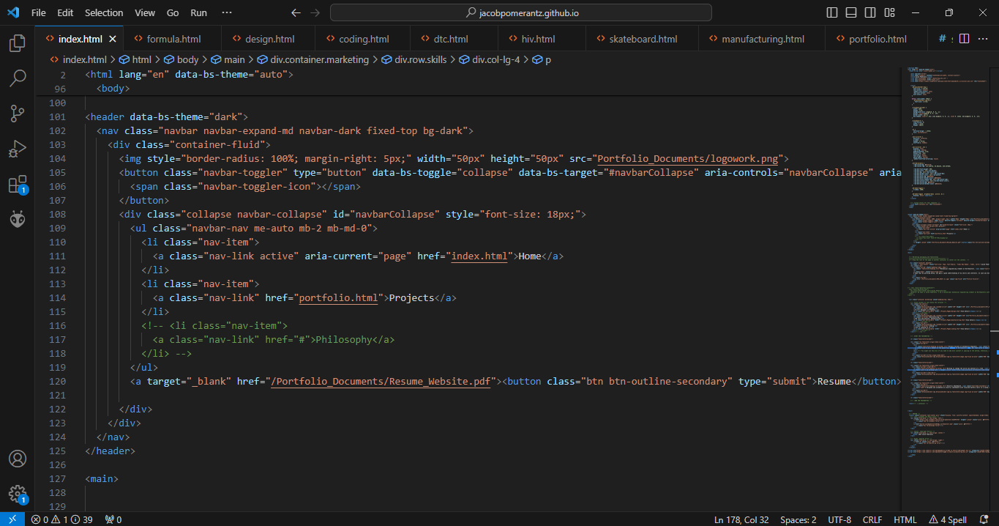

Coding
This Website.
I coded this website from scratch using HTML and CSS (and just a little bit of Chat GPT). This website is intended to showcase my engineering and design work that I have accumulated throughout my time in college. I have gone through the design and iterate process, working with reviewers to improve and redesign my website. This has been a long process, but definitely a fun one.
Collaborators:
Skills Used:
HTML
CSS (& Bootstrap)


Differential Equation Modeling.
As part of differential equations, we were tasked with modeling populations and oscillators over time. Working with a group of 4 others, we used MATLAB to model the following objectives:
- The population of a species with a mutualistic interaction over time
- The population of a species with a negative natural birthrate, a population enhancing term, and a crowding effect using two different MATLAB solvers. The goal was to understand fixed vs. adaptive step solvers
- The steady state of a forced damped oscillator over time
Collaborators:
Skills Used:
MATLAB
Differential Equations
Circuit Python.
Used python to code various circuits to perform different tasks such as simon says, rock paper scissors, and even imitate the frequency of a remote.
Skills Used:
Python
Circuit Python
Circuit Design